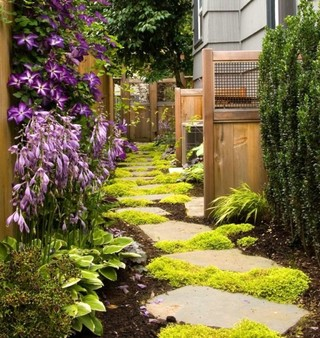

There’s nothing like spending time in a beautiful garden! A blooming space celebrates nature, soothes the soul and inspires creativity. Public gardens are filled with interesting design choices, but when it comes to planning a garden at home, the possibilities can seem overwhelming. Today we’ve...
There’s nothing like spending time in a beautiful garden! A blooming space celebrates nature, soothes the soul and inspires creativity. Public gardens are filled with interesting design choices, but when it comes to planning a garden at home, the possibilities can seem overwhelming. Today we’ve got some answers! From amazing landscaping ideas to unique garden features, we’ve collected the best options for a nature-filled space that makes an impression.
Flower Gardens
Terraced Flowerbeds
Colorful blossoms are a representation of new life. While planting flowers seems like second nature, why cultivate a space that looks like every other garden? Try terraced flowerbeds, which offer layers of landscaping options. Better yet–mix blooms with interesting greenery for a modern effect, as shown in the image below. [from Greenfingers]
Log Border Flowerbed
Stones, concrete and horizontal wooden beams are common flowerbed borders, but what about vertical logs? Sometimes injecting a bit of the unexpected delights the senses. The height of the border and the silver-white hue of the wood are two eye-catching reasons to give this idea a try! [from Cheap Seeds]
A Rocky Flower Garden
Speaking of unexpected, the patchy garden below combines low-lying blooms, lush vegetation and substantial rocks to create a feast for the eyes. [from Garden Dream]
Floral Containers
Don’t forget the power of an interesting container. The flowers below are an assortment of rich tones, but their careful arrangement is a work of art. Surprise yourself with some intentional planting and watch as your floral sculpture comes to life. [images below from The Art Garden]
Don’t forget to add height with tall plants and let some of the greenery spill over the edges. There can be many levels of detail to your arrangement:
Garden Greenery
Sculpted Shrubs
Trimmed hedges evoke the magic of an English garden. For a twist on this classic technique, try planting the shrubs inside of the flowerbeds, then tame them into sphere-like forms for a contemporary look that’s full of charm. [from Down to Earth Landscapes]
Greenery Meets Color
Another way to add surprise to a garden is through contrast. Choose red-leafed plants for variety, and surround them with greenery to make their color pop. [image of Chandor Gardens, from The Road Trip Destination Guide]
Eye-Catching Trellises
Oh, the beauty of a vine-filled trellis! While covered with flowers for part of the year, this garden focal point is most often pure green in color. Enhance its verdant appearance by strategically planting an assortment of grasses and shrubs in the space around it. The result: a natural paradise filled with various shades of green! [from Natural Home & Garden]
Cascading Vegetation
For texture and length, add “Silver Falls” dichondra to your garden. Not only does it serve as a silvery ground cover, it’s simply irresistible hanging from a tall perch. Who says a glittering waterfall has to be liquid? [from Fine Gardening]
A Garden Green
While many yards have at least a patch of lawn, few elegantly frame the space in a way that calls attention to the grass itself. In the image below, a low border of bricks and plants elegantly surrounds the lawn, creating a true “green.” A garden sculpture becomes a stately showpiece in this setting. [image of Dumbarton Oaks Garden, from Daily Tea Enjoyment]
Garden Pathways
Grid Path
Pathways create movement throughout the garden. Taking the time to make these walkways as beautiful as they are functional enhances an outdoor space. Instead of placing concrete tiles side by side, leave some room in between the stones, as shown below. The result is a grid effect that becomes lush when filled in with grass. [from archinspire]
Plant and Stone Pathways
If stepping stones lead garden-goers through dirt rather than grass, try filling the space in between with low-lying plants. Even if they spill over onto the stones, the resulting mounds of vegetation are visually stunning. [from Fun Design Ideas]

Plants aren’t the only pathway fillers… Add some rocks to the mix! Pebbles can create a modern look, especially when combined with rectangular walkway tiles and sprout-like grasses. [from Living Colour Landscapes]
Footpath as Flowerbed
What if your garden paths were framed as purposefully as the flowerbeds? Creating borders for a walkway makes attractive tiles even more prominent, especially when the stone is dark and surrounded with white pebbles. The best part: You don’t have to mow or fertilize these outdoor pathways! [from MundoHogar.com]
Boxwood Borders
Another way to outline a garden path involves the use of hedges. Boxwood is a hardy border plant of choice. Instead of creating straight lines with your walkways, cultivate them to open onto wider resting spaces, as shown below. The boxwood can then curve in response, creating geometric interest. [from Living Colour Landscapes]
Garden Seating
Simple Seating
Gardens are quiet places of contemplation, and nothing promotes this thoughtfulness like a welcoming place to sit. Don’t hesitate to keep it simple! A slab of concrete becomes a modern bench in the image below. [from paperblog]
Tree Trunk Seating
Solid. Natural. Unexpected. There is power in the sturdy statement of a tree trunk, especially when arranged around a wooden table for group seating options. [from Jackson & Fourth Garden Design]

Curved Benches
While a bench made of stacked stone is an ideal resting place, its unique curved shape is what commands attention below. Surrounding spaces can be just as important as seating itself, especially when a geometrically pleasing sanctuary takes center stage. [from Down to Earth Landscapes]
Outdoor Dining
Sometimes seating involves eating! Make outdoor dining spaces appealing with clean, flat surfaces like the slatted furnishings below. Add privacy with tall bamboo, and don’t forget the intrigue of sculptural elements! [from DIY Network]
Water Features
Tropical Pond
Water features are a calming presence in the garden. Deciding where and how to install them can take much thought and careful planning. Consider the space itself, the type of surrounding vegetation involved, and what is practical for your time and budget. Below, a rectangular, contemporary pond complements lush tropical plants. [from Gardenhouse]
Boxed Pond on a Green
There is indeed something powerfully simple about a boxy pond, especially when surrounded by manicured hedges and a flawless green lawn. [from Down to Earth Landscapes]
Square Koi Pond
Reinforce the shape of your pond by planting a delicate boxwood border around the perimeter. For an extra touch, add a birdbath or other statuesque item in the center of the water feature, as shown in the koi pond image below. [from Down to Earth Landscapes]
Birdbaths and Fountains
Remember that water features don’t have to be fancy to make an impact. Birdbaths and fountains are lovely garden additions, especially when given prominent placement. For example, a layer of polished stones can create an ideal bed for a ground fountain. [from Outdoorlivinguk]
Container Gardening
Indoor Container Gardening
If a garden in the yard is not possible, don’t forget about indoor plant options! An assortment of attractive container choices and styles makes indoor gardening a reality. Interesting vegetation, including the silvery Tillandsia “air plant” below, turns potted plants into conversation pieces. [images below from MulchMaid]
If the container is the canvas and the plants are the paints, remember to add variety to your composition! Choose vegetation of different colors and heights, and include nonliving elements such as rocks to turn empty pots into interesting plantscapes.
Modern Meets Traditional Gardening
Another way to create compelling potted plant arrangements involves mixing the modern with the traditional. For example, fill contemporary concrete planters with feminine flowers, as seen in the container on the left (below). [from Judy Reyes Photos]
A reverse of the concept is equally striking! Instead of filling modern pots with conventional blooms, fill traditional containers, such as urns, with modern succulents for a surprising contrast. [from Inspire Bohemia]
Matching Containers
The repetition of matching containers can unify a garden of potted selections. Choose similar colors and styles for your plants, or for a more minimalist yet powerful approach, go for multiples of the same pot. [from Land Escapes]
Cinder Block Wall
The DIY project below is one of the most unique uses of cinder blocks on record! Stacking these everyday items to create a wall of modern planters results in an architectural masterpiece. Filling the holes in the blocks with succulents is the icing on the cake! [from Potted]
Rooftop Gardening
We end with the wonder of a rooftop garden! The simplest of containers are effective in this space. For an added touch, display pots and watering cans. These practical details are garden-worthy, but they don’t require any weeding or tending! [from NY Terrace]